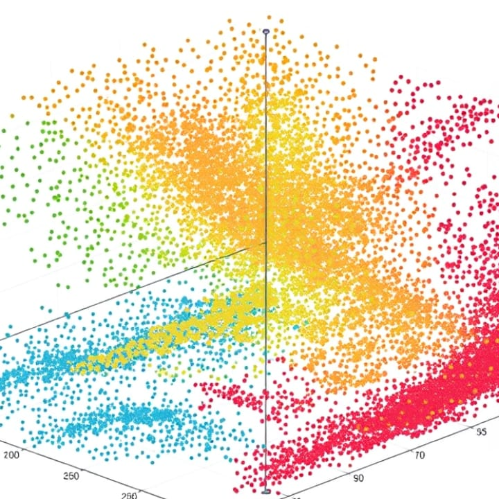

How to work with embeddings in a digital collection of sources?
The community meetings are held online using this link, usually on the first Tuesday of each month at 17:00 CET/CEST. No registration is required to attend. We warmly invite you to propose topics info@e-editiones.org for the forthcoming meetings.
Community meetup on December 10, 2024 at 17:00 CEST by Andreas Wagner from the Max Planck Institute for Legal History and Legal Theory / Academy of Sciences and Literature, Mainz
Digital collections of historical sources often feature texts that are comprised in one collection for a reason. Exploring this reason means investigating commonalities and differences between the texts contained in the collection. In one example - the project The School of Salamanca of the Academy of Sciences and Literature in Mainz - the relation between the texts is precisely one of the things the exploration of which the project intends to facilitate. For would understanding this relation not help us understand what the "school" might have been? In what ways?
For reasons of path dependencies, the platform of the project is not based on TEI Publisher, but it may serve as an example of what working with embeddings in such a context might involve anyway: For which parts of texts would you create embeddings, how and where would you store them, how would you access and process them, and what information would you want to provide to users of the platform based on these embeddings? The presentation reports on an ongoing experiment the core of which is the definition of an API handling the storage, comparison, and delivery of embeddings (the API of a vector store, then) on the one hand, and a proposal of how to extend APIs for handling (lists or passages of) texts with affordances based on embeddings (the API of a digital collection of sources, that is).
Participation is free of charge and open to anyone interested. No registration is required to attend. We will meet Tuesday, the 10th of December at 17:00 CEST in our e-editiones community Teams channel. The link can be found at the top of the page.
The event took place on Tuesday the 10th of December from 17:00 till 18:00 CET on Jitsi.
{kind=link}